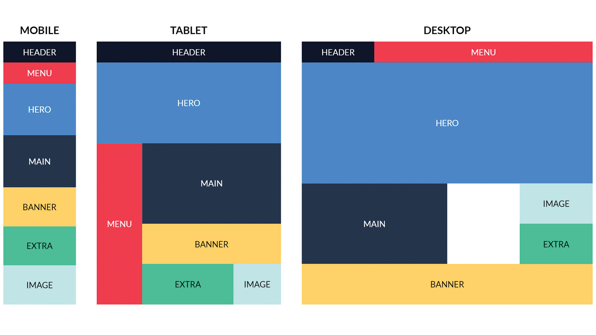

반응형 디자인
반응형 디자인은 웹페이지의 크기 등의 정보를 받아 웹페이지의 형태를 바꾸는 디자인입니다.데스크탑 버전 웹사이트와 모바일 버전 웹사이트의 모양이 다른 것은 보는 사람의 편의를 위한 반응형 디자인의 일종입니다.
아래는 예시 반응형 디자인을 그림으로 나타낸 것입니다. 이제 아래를 천천히 읽으며 만드는 방법을 알아봅시다! 
미디어 쿼리
이 글에서 소개할 반응형 디자인은 미디어 쿼리입니다. 미디어 쿼리를 사용하면 간단히 창의 크기에 따라 style 속성을 변화시킬 수 있습니다.창의 크기는 (max, min)-(width, height)을 이용해 처리합니다. 600px 이상일 때는 "min-width: 600px"와 같이 나타내면 됩니다.
모든 CSS 코드는 위부터 처리되므로 미디어 쿼리는 제일 밑에 있어야 영향을 받습니다.
여러 개의 미디어 쿼리가 있을 때는 위의 미디어 쿼리가 적용되지 않은 경우 아래 미디어 쿼리가 실행됩니다. "else if"와 같이 생각하면 됩니다.
문법
미디어 쿼리: @media ((min, max)-(width, height): ___px) {......} [style 태그 내에 적기]
예시
Extra small devices (600px and down) @media (max-width: 600px) {......}
Small devices (600px and up) @media (min-width: 600px) {......}
Medium devices (768px and up) @media (min-width: 768px) {......}
Large devices (992px and up) @media (min-width: 992px) {......}
Extra large devices (1200px and up) @media (min-width: 1200px) {......}
반응형 디자인 템플릿을 얻고 싶으시다면: https://www.w3schools.com/css/css_rwd_templates.asp